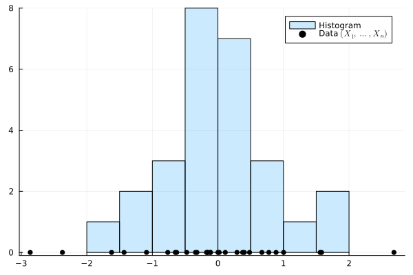
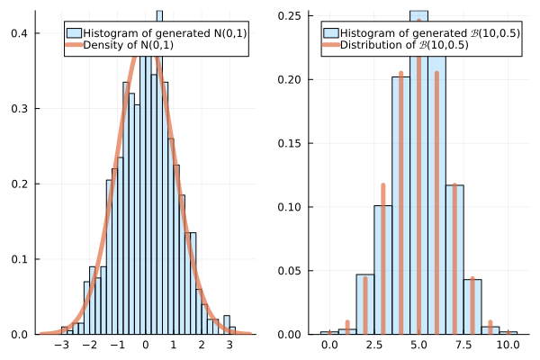

Multi-dimensional Tests
Multinomials
Binomial Distribution
- Draw \(n\) balls, blue or red.
- \(p_1, (1-p_1)\): proportion of blues/red
- \(X\), \(Y\): counts of blues/red
- \(X \sim \mathrm{Bin}(n,p_1)\)
- \(\mathbb P((X,Y) = (k_1,k_2)) = \binom{n}{k_1}p_1^k(1-p_1)^{k_2}\)
if \(k_1 +k_2 = n\)
Multinomial Distribution
- Draw \(n\) balls, \(m\) potential colors.
- \((p_1, \dots, p_m)\): proportions of each color: \(\sum_{i=1}^m p_i = 1\)
- \(X_1, \dots, X_m\): count of each color
- \((X_1, \dots, X_m) \sim \mathrm{Mult}(n,(p_1, \dots, p_m))\)
- \(\mathbb P((X_1, \dots, X_m)=(k_1, \dots, k_m)) = \frac{n!}{k_1!\dots k_m!}p_1^{k_1} \dots p_m^{k_m}\)
if \(k_1 + \dots + k_m = n\)
- \(\frac{n!}{k_1!\dots k_m!} = \binom{n}{k_1,\dots, k_m}\) is a multinomial coefficient
- In this course: \(n \gg m\).
- \(m \gg n\) corresponds to a high-dimensional setting.
Chi-Squared Goodness of Fit and Homogeneity Tests
Goodness of Fit Test
- We observe \((X_1, \dots, X_m) \sim \mathrm{Mult}(n, q)\) This corresponds to \(n\) counts: \(X_1 + \dots + X_m = n\)
- \(q = (q_1, \dots, q_m)\) corresponds to probabilities of getting color \(1, \dots, m\)
- Let \(p = (p_1, \dots, p_m)\) be a known vector s.t. \(p_1 + \dots + p_m = 1\).
- \(H_0:~ q = p ~~~\text{or}~~~ H_1: q \neq p \; .\)
Goodness of Fit Test (Adéquation)
- Chi-Squared Test Statistic: \[\psi(X) = \sum_{i=1}^m\frac{(X_i-n_i)^2}{n_i} \; ,\] where \(n_i = np_i = \mathbb E[X_i]\) is the expected number of counts for color \(i.\)
- When \(np_i = n_i\) are large, under \(H_0\), we approximate the distribution of \(\psi(X)\) as \(\psi(X) \sim \chi^2(m-1)\)
- Reject if \(\psi(X) > t_{1- \alpha}\) (right-tail of \(\chi^2(m-1)\))

Example: Bag of Sweets
- We observe a bag of sweets containing \(n=100\) sweets of \(m=3\) different colors: red, green, and yellow.
- Manufacturer: \(p_1= 40\%\) red, \(p_2=35\%\) green, and \(p_3=25\%\) yellow.
- \(H_0: q=p\) (manufacturer’s claim is correct)
- \(H_1: q\neq p\) (manufacturer’s claim is incorrect)
| Color | Observed Counts |
|---|---|
| Red | \(X_1=50\) |
| Green | \(X_2=30\) |
| Yellow | \(X_3=20\) |
| Expected Counts |
|---|
| \(n_1=40\) |
| \(n_2=35\) |
| \(n_3=25\) |
- \(\psi(X) = \sum_{i=1}^m\frac{(X_i-n_i)^2}{n_i} \approx 2.5 +0.71+1 \approx 4.21\)
- \(\mathrm{cdf}(\chi^2(2), 4.21) \approx 0.878\) (\(p_{value} \approx 0.222\))
- Conclusion: do not reject \(H_0\)
Homogeneity Test
- \(d\) different bags, each containing \(m\) colors.
- If \(d = 3\) and \(m=2\), we observe the following \(2\times 3\) matrix:
| bag 1 | bag 2 | bag 3 | Total | |
|---|---|---|---|---|
| color 1 | \(X_{11}\) | \(X_{12}\) | \(X_{13}\) | \(R_1\) |
| color 2 | \(X_{21}\) | \(X_{22}\) | \(X_{23}\) | \(R_2\) |
| Total | \(N_1\) | \(N_2\) | \(N_3\) | \(N\) |
Chi-Squared Homogeneity Test Statistic
- \(\hat p_{i} = \tfrac{1}{N}\sum_{j=1}^{d}X_{ij} = \frac{R_i}{N}\)
- \(\psi(X) = \sum_{i=1}^m\sum_{j=1}^d \frac{(X_{ij}- N_j\hat p_{i})^2}{N_j\hat p_{i}}\)
- Approximation: \(\psi(X) \sim \chi^2((m-1)(d-1))\)
Example: Soft drink preferences
- Split population into \(3\) categories: Young Adults (18-30), Middle-Aged Adults (31-50), and Seniors (51 and above).
- \(H_0\): The groups are homogeneous in terms of soft drink preferences
| Age Group | Young Adults | Middle-Aged | Seniors | Total |
|---|---|---|---|---|
| Coke | 60 | 40 | 30 | 130 |
| Pepsi | 50 | 55 | 25 | 130 |
| Sprite | 30 | 45 | 55 | 130 |
| Total | 140 | 140 | 110 | 390 |
- \(N_1 \hat p_1 = 140*\frac{130}{390} \approx 46.7\)
\[ \begin{aligned} \psi(X) &= \frac{(60-46.7)^2}{46.7}&+ \frac{(40-46.7)^2}{46.7}&+\frac{(30-36.7)^2}{36.7} \\ &+\frac{(50-46.7)^2}{46.7}&+ \frac{(55-46.7)^2}{46.7}&+\frac{(25-36.7)^2}{36.7}\\ &+\frac{(30-46.7)^2}{46.7}&+ \frac{(45-46.7)^2}{46.7}&+\frac{(55-36.7)^2}{36.7}\\ &\approx 26.57 \end{aligned} \]
1-cdf(Chisq(4), 26.57) # 2.4e-5, reject H_0Comparison to a Theoretical Disrtribution
Histograms
histogram
- We observe \((X_1, \dots, X_n) \in \mathbb R^n\)
- \(\mathrm{counts}(I) = \sum \mathbf 1\{X_i \in I\} \in \{1, \dots, n\}\; .\)
- \(\mathrm{freq}(I) = \mathrm{counts}(I)/n\)
- \(\mathrm{hist}(a,b,k) = (\mathrm{counts}(I_1), \dots,\mathrm{counts}(I_k))\)
- where \(I_l = \big[a + (l-1)\tfrac{b-a}{k},a + l\tfrac{b-a}{k}\big)\)
Normalization
Can be normalized in counts (default), frequency, or density (area under the curve = 1)

Law of Large Number, Monte Carlo (Informal)
- Assume that \((X_1, \dots, X_n)\) are iid of distrib \(P\), and that \(a\),\(b\), \(k\) are fixed
- The histogram \(\mathrm{hist}(a,b,k)\) converges to the histogram of the density \(P\)

Goodness of Fit to a given distribution
- We observe \((X_1, \dots, X_n) \in \mathbb R^n\), iid with unknown distrib \(P\)
- \(H_0\): \(P = P_0\), where \(P_0\) is known
- \(H_1\): \(P \neq P_0\)
- Idea: Under \(H_0\), the counts in the intervals \([a_0, a_1), [a_1, a_2), \dots, [a_{k-1}, a_k)\) follow a multinomial distribution \(\mathrm{Mult}(n, (p_1, \dots, p_{k}))\) where \(p_1 = P_0([a_0, a_1)), \dots, p_{k} = P_0([a_{k-1}, a_k))\)
Reduction to Chi-Squared Statistic Test
- Count the number of data \((c_1, \dots, c_k)\) falling in \(I_1, \dots, I_k\)
- Compare the counts the theoretical \(nP_0(I_1) \dots, nP_0(I_k)\) with a chi-squared statistic: \[ \sum_{j=1}^k \frac{(c_j - nP_0(I_j))^2}{nP_0(I_1)}\]
- Decide using an \(\alpha\)-quantile of a \(\chi^2(k-1)\) distribution
Example: Goodness of Fit to a Poisson distribution
\(H_0\): \(X_i\) iid \(\mathcal P(2)\)
X = [1, 0, 1, 0, 1, 0, 0, 0, 0, 0, 4, 3, 0, 1, 1, 2, 3, 0, 1, 0, 0, 2, 1, 0, 1, 0, 0, 2, 0, 0]| \(0\) | \(1\) | \(2\) | \(\geq 3\) | Total | |
|---|---|---|---|---|---|
| Counts | 16 | 8 | 3 | 3 | 30 |
| Theoretical Counts | 4.06 | 8.1 | 8.1 | 9.7 |
- To get \(9.7\), we compute
(1-cdf(Poisson(2),2))*30 - chi square stat \(\gtrsim \frac{(16-4)^2}{4} = 36\)
(1-cdf(Chisq(3),36))is very small: Reject
Comparison with QQ-Plots
- We observe \((X_1, \dots, X_n)\) of unknown CDF \(F\)
- \(H_0\): \(F = F_0\) where \(F_0\) is known
- \(H_1\): \(F \neq F_0\)
- We write \(X_{(1)} \leq \dots \leq X_{(n)}\) for the ordered data
- empirical \(\frac{k}{n}\)-quantile: \(X_{(k)}\)
- \(\frac{k}{n}\)-quantile: \(x\) such that \(F(x) = \frac{k}{n}\)
QQ-Plot
- Represent the empirical quantiles in function of the theoretical quantiles.
- Compare the scatter plot with \(y=x\)